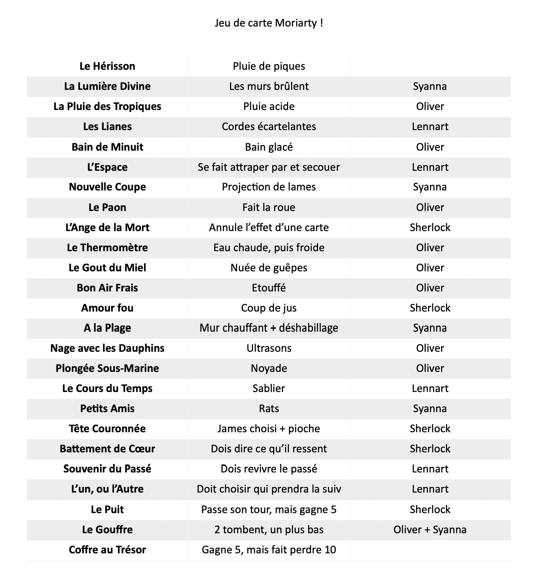

SEPTEMBRE
PETITES ANNONCES
AUX ABONNÉS ABSENTS
Des absences temporaires sont à déplorer : Time est parti rejoindre de la famille en Écosse, Yuki est partie au Japon et Eddie a été muté on ne sait où pour le moment.
MORIARTY LE SALIGAUD
Moriarty s'est mis dans la tête de "s'amuser" avec Oliver afin de le détruire et d'avoir Léa pour lui. Il a ainsi kidnappé Lennart et Syanna dans le but de faire chanter Oliver et de l'obliger à rompre avec Léa.
Oliver se disant que le plan de Moriarty ne marchera jamais

POUR UNE POIGNÉE DE DOUTES
Moriarty a réussi son coup. Oliver ne s'approche désormais plus de Léa. Du moins pour le moment...
Ce fripon a fait croire à tout le monde qu'il avait tué Lennart, dans l'unique but de les détruire psychologiquement et de s'en amuser.
Qui sait où Madsen est et dans quel état il se trouve...
Léa s'apprête à se livrer à Moriarty.
Syanna, quant à elle, s'est fait une frayeur, mais est désormais en sécurité dans une planque, surveillée par son APR (Agent de Protection Rapprochée) Longcross.
Pendant ce temps là, Dianna et Saana, une petite nouvelle, font connaissances et discutent de sujets assez douteux...

Que nous réserve la suite ? Seul l'avenir nous le dira. Ou pas...
RÉSUMÉ
- Time, Yuki & Eddie : partis temporairement
- Lennart & Syanna : kidnappés
- Lennart : considéré comme mort
- Léa & William : sous le choc, apprennent par la suite que Lennart n'est en fait pas mort
- Oliver : parti en Italie, a coupé les ponts avec Léa (simulé)
- Oliver : énergique et motivé, en Italie
- Syanna : libérée, sous protection rapprochée (Longcross)
- Sherlock : suivi par deux jeunes femmes (Dianna & Saana) travaillant pour Moriarty
- Léa : s'apprête à se livrer à Moriarty
- SIS : se prépare à épauler Léa et à faire sortir Lennart
REMETTRE LES PENDULES À L'HEURE
RÉSUMÉ
Voici un petit résumé pour vous remettre les éléments de la dernière fois en tête :
- Moriarty ne semble pas prêt à laisser Léa voir Lennart. Du moins, est-ce vraiment le cas ? Il semble avoir fait une erreur… ou pas… L'imprévisibilité de Moriarty bat son plein.
- Léa est partie au manoir dans l'espoir de trouver Lennart.
- Pendant ce temps là, Syanna et Longcross ont changé de planque après s'être enfui de chez Moriarty. Le SIS est au courant et les invite à rester confiné pour le moment.
- Au SIS justement, une chasse à la taupe est organisée. Mycroft a déjà sa petite idée là-dessus. Il a déjà fait comprendre à Petro qu'il était un suspect potentiel. Ce dernier s'étant absenté pour une raison inconnu. Le deuxième suspect n'est autre que Longcross. Mais faute de preuves pour le moment, la taupe reste encore inconnue.
- Sherlock quant à lui, enquête de son côté sur cette taupe. Il est suivi par deux jeunes femmes travaillant pour Moriarty. Le but : suivre ses moindres faits et gestes et les rapporter au grand patron.
- Concernant William, il a l'air d'être dans les choux. Le pauvre, il faut le comprendre. Les 24 dernières heures ont été une montagne russe pour lui. La captivité de Lennart, l'annonce de sa mort, puis l'annonce de sa survie… Il se repose chez lui pour le moment. C lui a donné quelques jours de congé.
- En ce qui concerne Oliver… pas de nouvelle bonne nouvelle ? De ce qu'on sait il est à Milan, en Italie, sur ordres de C et Mycroft. Mais pour quoi faire ? Ça reste pour le moment un mystère.
Mais la questions la plus importante en ce moment est :
Où est Lennart ?
Et surtout, dans quel état ? Est-il mort ? Est-ce trop tard ?
LE DÉBUT DE LA FIN ?
FAITS
Après moult énigmes et péripéties, William avec l'aide de C et Léa a réussi à retrouver Lennart en vie dans le cimetière de Highgate. Lennart a été soigné, mais il reste pour le moment traumatisé par ce qu'il a vécu.
Cimetière de Highgate, Cercle du Liban

Syanna, quant à elle, a eu la mauvaise expérience de comprendre qu'elle s'était faite trompée depuis le début. La taupe était bien Longcross. Ce dernier avait emmené Syanna à une fausse planque après l'avoir sortie de chez Moriarty pour la seconde fois. Le SIS n'en savait rien.
Jonathan Richard Longcross, actuellement recherché par les services de sa Majesté

Petro a réussi à se justifier alors qu'il a été piégé par Moriarty et accusé à tort d'être la taupe par le SIS (notamment par Mycroft).
Oliver n'a pas chômé en Italie. Il est maintenant de retour à Londres, à la demande de C. Et il compte bien en finir avec Moriarty et récupérer Léa.
RÉSUMÉ
- Longcross : disparu, recherché (traître, taupe)
- Mycroft & C : recherchent activement Longcross et gèrent la présence de Léa chez Moriarty
- Lennart : retrouvé, traumatisé
- William : triste pour Lennart, veille sur lui
- Syanna : sous le choc, besoin d'assistance
- Oliver : énergique et motivé, en Italie
- Petro : se fait tout petit et se justifie
PAS DE RÉPIT POUR LES BRAVES !

FAITS
Alors que Lennart est encore traumatisé par ce qu'il a vécu et que Syanna a du mal à se remettre de la "mort" de Time, Moriarty décide de de nouveau s'amuser.
Oliver avait prévu de porter un coup décisif à Moriarty pour récupérer Léa, mais malheureusement ça ne s'est pas fait.
Au final, Moriarty a kidnappé : Sherlock, Yuki (qui est de retour), Elinor, Lennart, Syanna et Oliver. Son but : S'amuser en jouant à un jeu de cartes sordide. Il s'agissait d'un jeu de torture, des plus diversifié.
Sherlock et Elinor devait choisir une carte parmis trois distribuées et il devait choisir une personne entre Lennart, Syanna et Oliver. Ce qu'il y avait sur la carte était alors effectué sur la personne choisie pour gagner des points.
Le but étant d'arriver jusqu'à 200 points.
Lennart : 50 points
Syanna : 25 points
Oliver : 10 points
Si Sherlock et Elinor venait à refuser de jouer, Moriarty jouait à leur place.
Désormais, tout ces bons gens sont à l'hôpital. Lennart, Syanna et Oliver en ont bavé. Ils s'en remettent. Elinor reste au chevet de son ami Syanna. Elle aussi a été touché par ce qu'il s'est passé.
Mycroft a été prévenu par William. Sherlock lui a fait le topo de la situation.

POUR QUELQUES DOUTES DE PLUS
Moriarty a profité de l'amnésie de Syanna pour lui faire croire qu'il était son petit-ami. Il a même changé le décor de chez Syanna pour lui faire croire ça, le tabarnouche ! Bien évidemment tout ceci n'était qu'un coup monté. Sherlock et Elinor ont réussi à remettre tout en ordre. Moriarty a fui, une balle dans le bras (GG Syanna).
Pendant ce temps là, C, Mycroft, Oliver, Lennart, William, Q Yuki et Mathias apprennent la mort de Léa. Vous imaginez comment se retrouvent Mycroft, Oliver et Lennart ?
Même Sherlock est atteint. Il a tenté à nouveau de se droguer, mais faute de stock disponible, il ne l'a pas fait (GG again Syanna). Quoi qu'il en soit, il s'est mis dans la tête de résoudre toutes les enquêtes du monde en attendant que Syanna et lui aillent mieux. John essayent d'aider ces deux enquêteurs de génie, mais ce n'est pas gagné...
En même temps, Morston est victime d'un attentat à son encontre alors qu'il visitait une usine de yaourt pour le lobby des produits laitiers. Qui c'est qui ne va pas être content lorsqu'il va voir les infos ? C'est Petro. Et accessoirement, C, Mycroft, ainsi que la femme de Morston. Mais bon...
RÉSUMÉ
- Sherlock : tasé, mais va bien
- Elinor : sous le choc, culpabilise, a recommencé à se droguer
- Lennart : extrêmement sous le choc, deux points de suture à la tempe
- Syanna : extrêmement sous le choc, a perdu la mémoire, de nombreuses coupures, une chute de trois mètres
- Oliver : problème d'audition a une oreille, de nombreuses piqures, brûlures, chute de deux mètres
LE RÉVEIL DES MORTS !

FAITS
Loin de nous semble se trouver le temps du deuil ! En effet, les morts semblent ressortir de leur tombe ! Un peu à la The Walking Dead, mais sans la bave et la chair en décomposition...
Time a refait surface chez Lestrade après avoir traversé les déserts glacés et leurs différents cartels. Visiblement, il en faut plus qu’un crash d’avion pour en venir à bout ! À moins qu’il ne soit en réalité jamais monté à l’intérieur... Car c’est bien ce qui était arrivé. Moriarty l’avait embarqué avant le décollage et l’avait forcé tout ce temps à regarder Syanna souffrir de son absence avant qu’il ne réussisse à s’échapper.
Léa a été arrachée des mains de l’infâme James Moriarty ! Il aura fallu une ceinture explosive et une blague des plus douteuse, mais elle en ressortira plus forte que jamais ! Ou peut-être pas... Maintenant prise d'un toc étrange l’obligeant à toucher le visage et les cheveux de quiconque s’approche d’elle. En plus, Time et Sherlock n’avait rien trouvé de plus intelligent que faire croire qu’ils ne pouvaient pas désactiver la bombe et avaient fait semblant de fuir ! Laissant Syanna et Léa sur place en mode panique. Bizarrement, les deux femmes n’avaient pas trouvé ça très drôle, elles...
Anderson et Lestrade font des miracles grâce à leurs théories de plus en plus loufoques ! Leur dernière trouvaille ? Que Time et Sherlock s’aiment en secret et qu’ils vont faire croire à la mort du gamin pour pouvoir fuir tous les deux, main dans la main, filant ainsi le parfait amour. Comment ? Une bagarre entre Time et Sherlock à propos de leur amour pour Syanna et... la bière. Pensez tout de même que ces deux-là protègent la nation eux aussi, comme dirait l’autre.
Lennart se remet lentement, mais sûrement de ses mésaventures, contrairement à Oliver qui ne semble que s’enfoncer la tête dans le sable un peu plus chaque jour... Pendant que l’un reprend le travail et consulte un psychiatre, l’autre se morfondait et s’en voulait pour des choses qui n’étaient même pas de son fait. Les deux amis avaient intérêt à s’épauler pour pouvoir sortir tout les deux de ces sables mouvants.
Yuki punch Mycroft, afin d’obtenir les remerciements qu’elle mérite tant, mais cette tête de mule reste muette. Il n’était pourtant là question que d’un « Nous vous faisons confiance », mais même cela semblait être toute une épreuve pour l’homme au cœur de glace. Il serait certainement resté muet si Arles n’était pas intervenu ! Au final, c’est ce dernier qui dira à Yuki qu’elle est indispensable au bon fonctionnement du SIS et qu’elle est un atout considérable !
Pendant ce temps, Sherlock et Syanna filent le parfait amour. J’ai dit parfait ? Oups... Oui, il faut tout de même préciser que notre jeune homme n’est pas vraiment familier avec les relations humaines et qu’il fait pas mal de boulettes. Bien heureusement, la jeune femme était compréhensive et lui pardonnait plus, ou moins, vite ses maladresses.
RÉSUMÉ
- Time : est revenu d’entre les morts, même s’il est bien esquinté
- Léa : en vie aussi et bien bouzillée également
- Anderson : fidèle à lui-même, fait des théories sur tout et n’importe quoi en se pensant aussi intelligent que Sherlock
- Lestrade : croit Anderson comme un débile
- Lennart : essaie de ressortir la tête de l’eau
- Oliver : s’enfonce un peu plus sa tête sous l’eau
- Yuki : est revenue, mais en veut à Mycroft pour tout ce qu’elle a perdu
- Sherlock : est maladroit dans son amour avec Syanna, mais fait des efforts
- Syanna : est folle amoureuse et accepte les maladresses de Sherlock